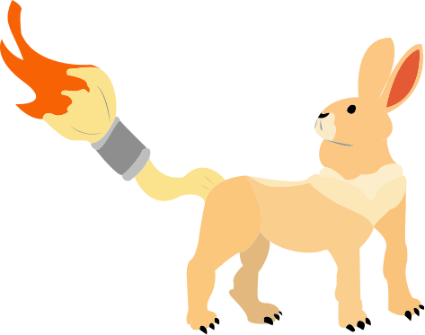

Entropia visual
Nossos algoritmos geram composições abstratas e vetores únicos a partir do ruído visual, criando em nossa tela principal um ambiente livre de expectativas.


Uma plataforma voltada para criativos de todas as idades, servindo como muleta criativa na era da IA. Explore pontos de vista distintos, forme insights e compartilhe-os com outros usuários!
Às vezes, a verdadeira inspiração não vem de criar o inédito, mas de aprender a enxergar o que sempre esteve lá. O Paradôlia utiliza a entropia visual e a neurociência da percepção para transformar ruído abstrato em estimulação criativa, combatendo o burnout de artistas digitais e game devs.
Nossos algoritmos geram composições abstratas e vetores únicos a partir do ruído visual, criando em nossa tela principal um ambiente livre de expectativas.
A cada iteração, você recebe uma mensagem motivacional única e aleatória do nosso banco de inspirações.
Poste ou comente em novas ideias de outros usuários, afinal, a união faz a força!

Já parou para reparar nos mínimos detalhes daquela cena de anime que te deixou sem palavras? Mais do que simples desenhos...

Aqueles cenários de tirar o fôlego nos animes não surgem por acaso. Por trás de cada céu estrelado, cidade cyberpunk...

A verdadeira arte não é apenas aquela que admiramos de longe, mas a que consegue mexer com a gente por...